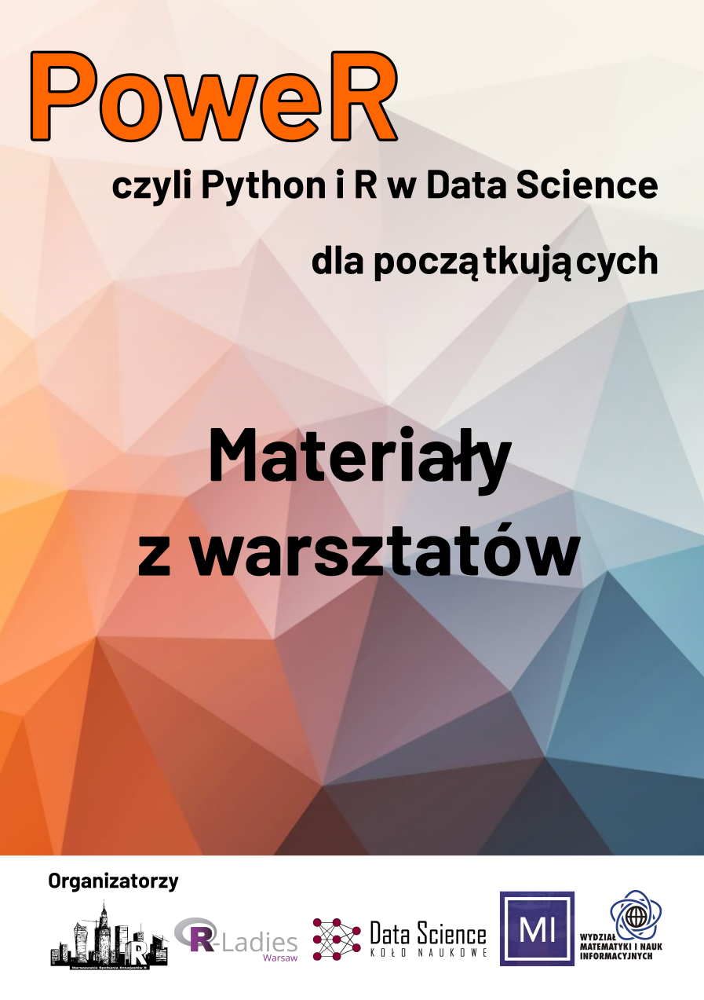

PoweR, czyli Python i R w Data Science dla początkujących
2020-01-13
1 Wstęp

Przedstawiamy mini podręcznik do nauki Pythona i R w Data Science.
Zebrane materiały są częścią warsztatów “PoweR, czyli Python i R w Data Science dla początkujących” organizowanych przez:
Warszawskie Spotkania Entuzjastów R
R Ladies Warsaw
Koło Naukowe Data Science PW
MI2DataLab
Wydział Matematyki i Nauk Informacyjnych, Politechnika Warszawska
Nasi prowadzący:
Część 1 - Podstawy języka
Grupa Python - Kasia Stankiewicz

Kasia jest studentką 3 roku Informatyki na MiNI, zakochana w Data Science. Już od kilku lat bierze udział w prowadzeniu różnego rodzaju wykładów i warsztatów. W wolnym czasie jest wiceprezesem Koła Naukowego Data Science na PW i wspina się na skałkach.
Grupa R - Alicja Gosiewska

Alicja jest doktorantką informatyki na Politechnice Warszawskiej związaną z MI2 Data Labem. Uwielbia wprowadzać ludzi w świat programowania w R podczas warsztatów, często wspieranych przez R-Ladies Warsaw. W pracy naukowej zajmuje się wyjaśnialnym uczeniem maszynowym, jest autorką pakietów R takich jak auditor czy iBreakDown.
Część 2 - Formatowanie danych
Grupa Python - Kuba Wiśniewski

Kuba jest studentem Inżynierii i Analizy Danych na Politechnice Warszawskiej. W wolnych chwilach udziela się w Kole Naukowym Data Science. Lubi kontakt z ludźmi, sport i gotowanie.
Grupa R - Kasia Woźnica

Kasia jest doktorantką Politechniki Warszawskiej na informatyce. Pracuje też w MI2 Data Lab. W pracy naukowej zajmuje się automatycznym uczeniem maszynowym. Po godzinach lubi dzielić się z innymi swoimi umiejętnościami z programowania w R, a prowadzenie warsztatów jest ku temu świetną okazją.
Część 3 - Wizualne EDA
Grupa Python - Wojtek Tyczyński

Wojtek jest studentem Fizyki Technicznej na Politechnice Warszawskiej i wiceprezesem Koła Naukowego Data Science. Do jego głównych zainteresowań, poza data science, należy również wykorzystanie machine learningu w fizyce. Ponadto jest zawodnikiem jednej z warszawskich drużyn Futbolu Amerykańskiego.
Grupa R - Ania Kozak
Ania jest studentką Statystyki Matematycznej i Analizy Danych na Politechnice Warszawskiej oraz pracuje jako Data Scientist. Związana z MI2 Data Lab oraz Kołem Naukowym Data Science. W wolnych chwilach organizuje i prowadzi warsztaty (SER Warsaw, R Ladies Warsaw) związane z popularyzacją języka R. Jest autorką pakietu R vivo. Gdy nie programuje jest cukieRnikiem ;)